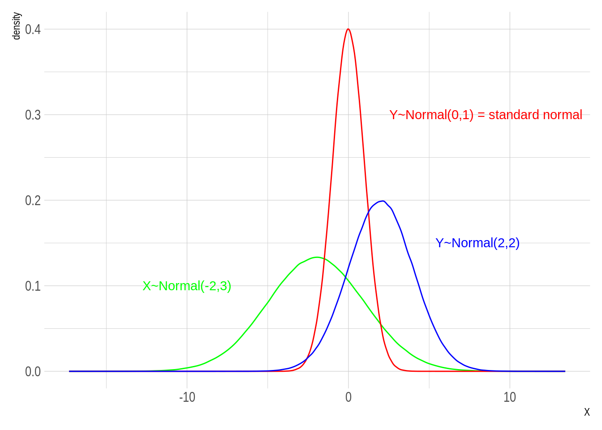
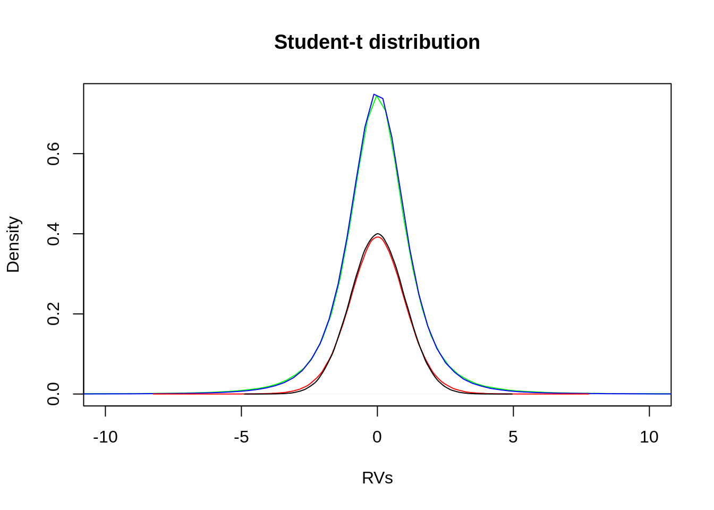
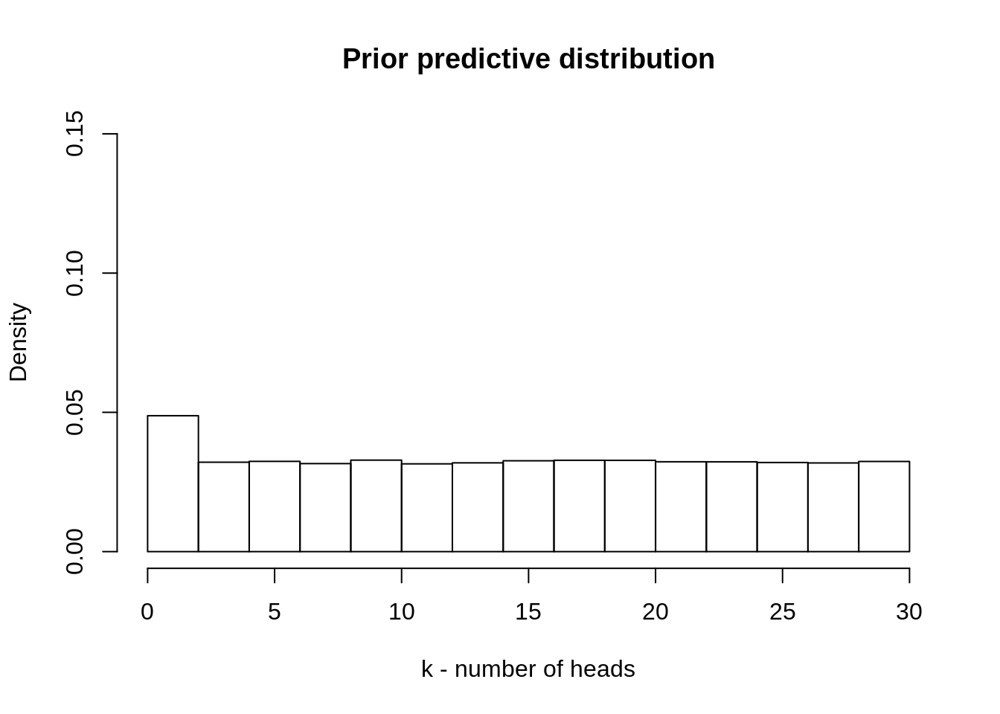
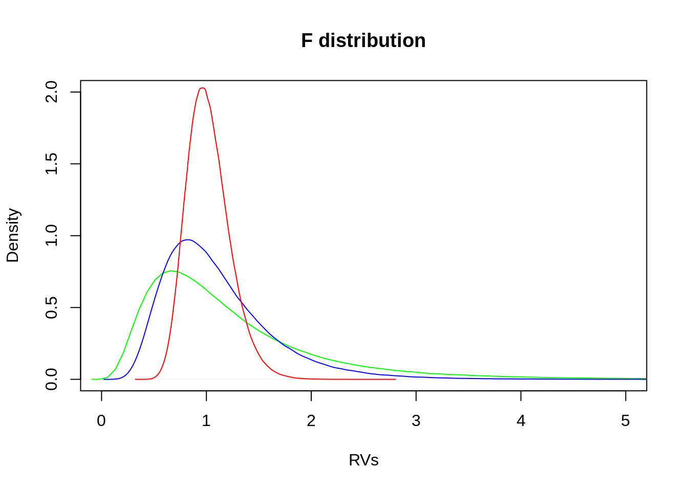
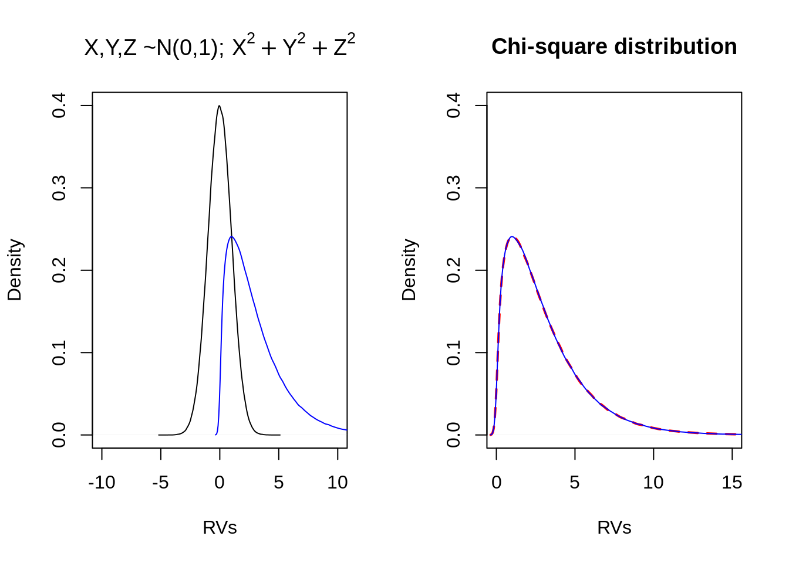
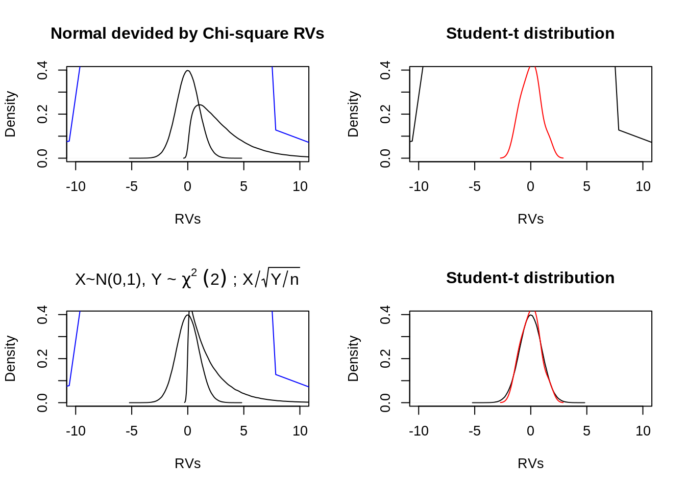

A Appendix: Common probability distributions
A.1 An important family: The Exponential Family
Most common distributions used in statistical modeling are members of the exponential family. Among others:
- Poisson distribution,
- Bernoulli distribution,
- Normal distribution,
- Chi-Square distribution, and of course the
- Exponential distribution.
In the upcoming section some of these distributions will be described in more detail. But what makes the exponential family so special? On the one hand, distributions of this family have some convenient mathematical properties which makes them attractive to use in statistical modeling. In particular for Bayesian Analysis: For example do all these distributions have a conjugate prior and the posterior distribution has a simple form. Furthermore the above example distributions are really just examples. The exponential family encompasses a wide class of distributions which makes it possible to model various cases.
On the other hand, the use of distributions from the exponential family is also from a conceptional perspective attractive. Consider for example the following situation:
Consider we want to infer a propability distribution subject to certain constraints. For example a coin flip experiment can have only a dichotomous outcome {0,1} and has a constant probability. Which distribution should be used in order to model this scenario?
There are several possible distributions that can be used, according to which criteria should a distribution be selected? Often one attempts a conservative choice, that is to bring as little subjective information into a model as possible. Or in other terms, one goal could be to select the distribution, among all possible distributions, that is maximal ignorant and least biased given the constraints.
Consequently, the question arises how “ignorance” can be measured and distributions compared according to their “information content”? This will be topic of the upcoming exursos, the key words here are “entropy”, which comes from information theory, and “Maximum Entropy Principal”.
To briefly anticipate the connection between exponential family and maximum ignorance distributions: The maximum entropy principal starts with constraints that are imposed on a distribution and derives by maximizing entropy a probability density/mass function. Distributions belonging to the exponential family arise as solutions to the maximum entropy problem subject to linear constraints.
In the upcoming section selected continous and discrete distributions will be described in more detail. Followed by a part which motivation is to strengthen the intuition about understanding distributions as random variables.
A.2 Excursos: “Information Entropy” and “Maximum Entropy Principal”
A.2.1 Information Entropy
Entropy is a measure of information content of an outcome of \(X\) such that less probable outcomes convey more information than more probable ones. Thus, entropy can be stated as a measure of uncertainty. When the goal is to find a distrbution that is as ignorant as possible, then, consequently, entropy should be maximal. Formally, entropy is defined as follows: If \(X\) is a discrete random variable with distribution \(P(X=x_i)=p_i\) then the entropy of \(X\) is \[H(X)=-\sum_{i} p_i \log p_i.\]
If \(X\) is a continuous random variable with probability density \(p(x)\) then the differential entropy of \(X\) is \[H(X)=-\int_{-\infty}^{+\infty} p(x) \log p(x) dx.\]
From which considerations is this entropy definition derived? There exist various approaches that finally come to the same answer: the above stated definition of entropy. However, the most cited derivation is Shannon’s theorem. Another and perhapse more intuitive derivation is Wallis derivation. Jaynes (2003) describes both approaches in detail. The following provides a short insight in both derivations and is taken from (Jaynes 2003).
A.2.1.1 Shannon’s theorem
Shannon’s approach starts by stating conditions that a measure of the \(H_n\) has to satisfy.
- It is possible to set up some kind of association between and real numbers
- \(H_n\) is a continous function of \(p_i\). Otherwise, an arbitrarily small change in the probability distribution would lead to a big change in the amount of uncertainty.
- \(H_n\) should correspond to common sense in that, when there are many possibilities, we are more uncertain than when there are few. This condition takes the form that in case the \(p_i\) are all equal, the quantity \(h(n)\) is a monotonic increasing function of \(n\).
- \(H_n\) is consistent in that, when there is more than one way of working out its value, we must get the same answer for few possible way.
Under these assumptions the resulting unique measure of uncertainty of a probability distribution \(p\) turns out to be just the average log-probability:
\[H(p)=-\sum_i p_i \log(p_i).\] (The interested reader can find a systematic derivation in (Jaynes 2003).) Accepting this interpretation of entropy, it follows that the distribution \((p_1,...,p_n)\) which maximizes the above equation, subject to constraints imposed by the available information, will represent the most description of what the model about the propositions \((A_1,...,A_n)\) (Jaynes 2003).
The function \(H\) is called the , or the of the distribution \(\{p_i\}\).
A.2.1.2 The Wallis derivation
A second and perhaps more intuitive approach of deriving entropy was suggested by G. Wallis. The following description is taken from Jaynes (2003).
We are given information \(I\), which is to be used in assigning probabilities \(\{p_1,...,p_m\}\) to \(m\) different probabilities. We have a total amount of probability
\[\sum_{i=1}^{m} p_i =1\]
to allocate among them.
The problem can be stated as follows. Choose some integer \(n>>m\), and imagine that we have \(n\) little of probabilities, each of magnitude \(\delta=\frac{1}{n}\), to distribute in an way we see fit.
Suppose we were to scatter these quanta at random among the \(m\) choices (penny-pitch game into \(m\) equal boxes). If we simply toss these quanta of probability at random, so that each box has an equal probability of getting them, nobody can claim that any box is being unfairly favoured over any other.
If we do this and the first box receives exactly \(n_1\) quanta, the second \(n_2\) quanta etc. we will say the random experiment has generated the probability assignment:
\[p_i=n_i\delta=\frac{n_i}{n}, \textrm{ with } i=1,2,...,m.\]
The probability that this will happen is the multinomial distribution:
\[m^{-n} \frac{n!}{n_1!\cdot...\cdot n_m!}.\]
Now imagine that we repeatedly scatter the \(n\) quanta at random among the \(m\) boxes. Each time we do this we examine the resulting probability assignment. If it happens to conform to the information \(I\), we accept it; otherwise we reject it and try again. We continue until some probability assignment \(\{p_1,...,p_m\}\) is accepted.
What is the most likely probability distribution to result from this game? It is the one which maximizes
\[W=\frac{n!}{n_1! \cdot ... \cdot n_m!}\]
subject whatever constraints are imposed by the information \(I\).
We can refine this procedure by using smaller quanta, i.e. large \(n\). By using
\[n!\sim \sqrt{(2\pi n)} \left(\frac{n}{e}\right)^n,\] and taking the logarithm from it:
\[\log(n!) \sim \sqrt{(2\pi n)}+n\log\left(\frac{n}{e}\right),\] we have
\[\log(n!) \sim \sqrt{(2\pi n)}+n\log(n) - n.\]
Taking furthermore, also the logarithm from \(W\) and substituting \(\log(n!)\) by Sterlings approximation, finally gives the definition of information entropy, as derived by Shannon’s theorem:
\[\frac{1}{n} \log(W) \rightarrow -\sum_{i=1}^{m}p_i\log(p_i)=H(p_1,...,p_m).\]
To sum it up: Entropy is a measure of uncertainty. The higher the entropy of a random variable \(X\) the more uncertainty it incorporates. When the goal is to find a maximal ignorance distribution, this goal can be consequently translated into a maximization problem: Find the distribution with maximal entropy subject to existing constraints. This will be topic of the next part of our excursos.
A.2.2 Deriving Probability Distributions using the Maximum Entropy Principle
The maximum entropy principle is a means of deriving probability distributions given certain constraints and the assumption of maximizing entropy. One technique for solving this maximization problem is the .
A.2.2.1 Lagrangian multiplier technique
Given a mutivariable function \(f(x,y,...)\) and constraints of the form \(g(x,y,...)=c\), where \(g\) is another multivariable function with the same input space as \(f\) and \(c\) is a constant.
In order to minimize (or maximize) the function \(f\) consider the following steps, assuming \(f\) to be \(f(x)\):
- Introduce a new variable \(\lambda\), called , and define a new function \(\mathcal{L}\) with the form:
\[\mathcal{L}(x,\lambda)=f(x)+\lambda (g(x)-c).\]
- Set the derivative of the function \(\mathcal{L}\) equal to the zero:
\[\mathcal{L'}(x,\lambda)=0,\]
in order to find the critical points of \(\mathcal{L}\).
- Consider each resulting solution within the limits of the made constraints and derive the resulting distribution \(f\), which gives the minimum (or maximum) one is searching for.
For more details see (Academy 2019)
A.2.2.2 Example 1: Derivation of maximum entropy pdf with no other constraints
For more details see (Finlayson 2017, @keng2017)
Suppose a random variable for which we have absolutely no information on its probability distribution, beside the fact that it should be a pdf and thus, integrate to 1. We ask for the following:
(Reza 1994)
We assume that the maximum ignorance distribution is the one with maximum entropy. It minimizes the prior information in a distribution and is therefore the most conservative choice.
For the continuous case entropy, the measure of uncertainty, is defined as
\[H(x)=-\int_{a}^{b}p(x) \log(p(x))dx,\]
with subject to the mentioned constraint that the sum of all probabilities is one (as it is a pdf):
\[\int_{a}^{b}p(x)dx =1.\]
Rewrite this into the form of equation gives
\[\mathcal{L}=-\int_{a}^{b}p(x) \log(p(x))dx + \lambda \left(\int_{a}^{b}p(x)dx-1 \right).\]
The next step is to the Lagrangian function. To solve this, we have to use the (Keng 2017).
First differentiating \(\mathcal{L}\) with respect to \(p(x)\)
\[\frac{\partial \mathcal{L}}{\partial p(x)}=0,\] \[-1-\log(p(x))+\lambda=0,\] \[p(x)=e^{(\lambda-1)}.\]
Second, the result of \(p(x)\) has to satisfy the stated constraint
\[\int_{a}^{b} p(x)dx=1,\]
\[\int_{a}^{b} e^{1-\lambda} dx=1.\]
Solving this equation with respect to \(\lambda\) gives:
\[\lambda=1-\log\left(\frac{1}{b-a}\right).\]
Taking both solutions together we get the following probability density function:
\[p(x)=e^{(1-\lambda)}=e^{\left(1-\left(1-\log\left(\frac{1}{b-a}\right)\right)\right)},\]
\[p(x)= \frac{1}{b-a}.\]
And this is the on the interval \([a,b]\). Such that, the answer of the above question is:
This should not be too unexpected. As it is quite intuitive that a uniform distribution is the maximal ignorance distribution (when no other constraints were made). The next example will be more exciting.
A.2.2.3 Example 2: Derivation of maximum entropy pdf with given mean \(\mu\) and variance \(\sigma^2\)
Suppose a random variable \(X\) with a preassigned standard deviation \(\sigma\) and mean \(\mu\). Again the question is:
The Maximum Entropy is defined for the current case as
\[H(X)=-\int_{-\infty}^{\infty} p(x) \log p(x)dx,\]
is subject to the constraint that it should be a pdf
\[\int_{-\infty}^{\infty} p(x)dx = 1,\] and that \(\mu\) and \(\sigma\) are given (whereby only one constrained is needed, as the \(\mu\) is already included in the definition of \(\sigma\)):
\[\int_{-\infty}^{\infty}(x-\mu)^2 p(x) dx = \sigma^2.\]
Accordingly to the above mentioned technique the formulas are summarized in form of the equation:
\[\mathcal{L}= -\int_{-\infty}^{\infty} p(x) \log p(x)dx + \lambda_0\left(\int_{-\infty}^{\infty} p(x)dx - 1 \right) + \lambda_1\left(\int_{-\infty}^{\infty}(x-\mu)^2 p(x) dx - \sigma^2 \right).\]
Next, \(\mathcal{L}\) will be partially differentiated with respect to \(p(x)\):
\[\frac{\partial \mathcal{L}}{\partial p(x)}=0,\] \[-(1+\log p(x))+\lambda_0+\lambda_1 (x-\mu)^2=0,\]
\[p(x)=e^{\lambda_0+\lambda_1 (x-\mu)^2-1}.\]
Further we have to make sure that the result holds for the stated constraints:
\[\int_{-\infty}^{\infty} e^{\lambda_0+\lambda_1 (x-\mu)^2-1}-1 dx = 1,\]
and
\[\int_{-\infty}^{\infty}(x-\mu)^2 e^{\lambda_0+\lambda_1 (x-\mu)^2-1} dx = \sigma^2.\]
For the first constraint we get
\[e^{\lambda_0-1} \sqrt{-\frac{\pi}{\lambda_1}} = 1,\]
and for the second constraint
\[e^{\lambda_0-1} = \sqrt{\frac{1}{2\pi}} \frac{1}{\sigma},\]
Thus
\[\lambda_1=\frac{-1}{2\sigma^2}\]
Taking all together we can write:
\[p(x)=e^{\lambda_0+\lambda_1 (x-\mu)^2-1}=e^{\lambda_0-1}e^{\lambda_1 (x-\mu)^2},\]
substituting the solutions for \(e^{\lambda_0-1}\) and \(\lambda_1\):
\[p(x)= \sqrt{\frac{1}{2\pi}} \frac{1}{\sigma} e^{\frac{-1}{2\sigma^2}(x-\mu)^2},\]
finally we can rearrange the terms a bit and get:
\[p(x)= \frac{1}{\sigma\sqrt{2\pi}}\exp{\left(\frac{-1}{2}\left(\frac{(x-\mu)^2}{\sigma^2}\right)\right)},\]
the .
To sum it up:
If one is to infer a probability distribution given certain constraints, out of all distributions \(\{p_i\}\) compatible with them, one should pick the distribution \(\{p_i^*\}\) having the largest value of \(H\) (De Martino and De Martino 2018). In other terms, a Maximum Entropy distribution is completely undetermined by features that do not appear explicitly in the constraints subject to which it has been computed.
An overview of Maximum Entropy distributions can be found on Wikipedia.
A.3 Selected continous distributions of random variables
A.3.1 Normal distribution
\[X\sim Normal(\mu,\sigma^2)\]
[usage of Normal distribution -> normal by addition, multiplication, log-multiplication]
n <- 1e6
rv.normal.intro <- data.frame(
X = rnorm(n, mean=-2, sd=3),
Y = rnorm(n, mean=0, sd=1),
Z = rnorm(n, mean=2, sd=2)
)
ggplot(data=rv.normal.intro, size=1)+
stat_density(aes(X), geom = "line", position="identity", color="green")+
annotate("text", x=-10, y=0.1, label="X~Normal(-2,3)", color="green")+
stat_density(aes(Y), geom = "line", position="identity", color="red")+
annotate("text", x=8.5, y=0.3, label="Y~Normal(0,1) = standard normal", color="red")+
stat_density(aes(Z), geom = "line", position="identity", color="blue")+
annotate("text", x=8, y=0.15, label="Y~Normal(2,2)", color="blue")
Special case of normal distributed random variables is the standard normal distributed variable with \(\mu=0\) and \(\sigma=1\): \(Y\sim Normal(0,1)\)
Probability density function
\[f(x)=\frac{1}{\sigma\sqrt{2\pi}}\exp\left(-0.5\left(\frac{x-\mu}{\sigma}\right)^2\right)\]
Cumulative distribution function
\[F(x)=\int_{-\inf}^{x}f(t)dt\]
Expected value \(E(X)=\mu\)
Variance \(Var(X)=\sigma^2\)
Z-transformation \(Z=\frac{X-\mu}{\sigma}\)
**Deviation and *Coverage**
- \(P(\mu-\sigma \leq X \leq \mu+\sigma)=0.6827\) (see dark blue area under the curve)
- \(P(\mu-2\sigma \leq X \leq \mu+2\sigma)=0.9545\) (see medium blue area under the curve)
- \(P(\mu-3\sigma \leq X \leq \mu+3\sigma)=0.9973\) (see light blue area under the curve)
(Interpretation example: About 68% of values drawn from a normal distribution are within one standard deviation \(\sigma\) away from the mean \(\mu\).)
# plot standard deviations of a normal distribution
ggplot(NULL, aes(x = c(-10, 10))) +
stat_function(fun = dnorm, args = list(mean = 0, sd = 2),
geom = "line",
xlim = c(-10, 10)) +
stat_function(fun = dnorm, args = list(mean = 0, sd = 2),
geom = "area",
fill = "blue",
alpha = .2,
xlim = c(-6, 6)) +
stat_function(fun = dnorm, args = list(mean = 0, sd = 2),
geom = "area",
fill = "blue",
alpha = .4,
xlim = c(-4, 4)) +
stat_function(fun = dnorm, args = list(mean = 0, sd = 2),
geom = "area",
fill = "blue",
alpha = .6,
xlim = c(-2, 2)) +
xlim(-10, 10)+
xlab("X")+
scale_x_continuous(breaks=c(-6,-4,-2,0,2,4,6),
labels=c(expression(-3~sigma),expression(-2~sigma),
expression(-sigma),"0",expression(sigma),
expression(2~sigma),expression(3~sigma)))
Linear transformations
- If \(X\sim Normal(\mu, \sigma^2)\) is linear transformed by \(Y=a*X+b\), then the new random variable is again normal distributed with \(Y \sim Normal(a\mu+b,a^2\sigma^2)\). See plot left side.
- Are \(X\sim Normal(\mu_x, \sigma^2)\) and \(Y\sim Normal(\mu_y, \sigma^2)\) normal distributed and independent, then their sum is again normal distributed with \(X+Y \sim Normal(\mu_x+\mu_y, \sigma_x^2+\sigma_y^2)\). See plot right side.
A.3.2 Chi-square distribution
\[Y\sim \chi^2(n)\]
The \(\chi^2\)-distribution is widely used in hypothesis testing in inferential statistics and less in modelling natural phenomena. The reason why it is used so often in inferential statistics is its relationsship to the standard normal distribution:
The sum of \(n\) independent and standard normal distributed random variables \(X_1,X_2,...,X_n\) is distributed according to a \(\chi^2\) distribution with \(n\) . The degrees of freedom refers to the number of independent standard normal random variables.
\[Y=X_1^2+X_2^2+...+X_n^2\]
plot(density(rchisq(1e6,3)),col="green", main=expression(chi^2~"distribution"), xlab="RVs")+
points(density(rchisq(1e6,10)),col="blue", type="l")+
points(density(rchisq(1e6,20)),col="red", type="l")
## integer(0)Expected value \(E(Y)=n\)
Variance \(Var(Y)=2n\)
Transformations Sum of two \(\chi^2\)-distributed random variables \(X \sim \chi^2(m)\) and \(Y \sim \chi^2(n)\) is again a \(chi^2\)-distributed random variable \(X+Y=\chi^2(m+n)\).
A.3.3 F distribution
\[F \sim F(m,n)\]
Used in particular in regression and variance analysis and consists of two \(chi^2\)-distributed random variables \(X\sim \chi^2(m)\) and \(Y\sim \chi^2(n)\):
\[F=\frac{\frac{X}{m}}{\frac{Y}{n}}\]
plot(density(rf(1e6,10,10)),col="green", main="F distribution",ylim=c(0,2),xlim=c(0,5),
xlab="RVs")+
points(density(rf(1e6,20,20)),col="blue", type="l")+
points(density(rf(1e6,100,100)),col="red", type="l")
## integer(0)Expected value \(E(F)=\frac{n}{n-2}\) (for \(n \geq 3\))
Variance \(Var(F)=\frac{2n^2(n+m-2)}{m(n-4)(n-2)^2}\) (for \(n \geq 5\))
A.3.4 Student t-distribution (not part of exponential family)
\[T \sim t(n)\]
The student-t-distribution is not part of the exponential family but is directly related to the normal distribution. It is used in particular when the sample size is small and the variance is unknown, which is often the case in reality. Its shape ressembles the normal bell shape, but the student-t-distribution is a bit lower and wider (bigger tails). For a large sample size (\(n \geq 30\)) the student-t-distribution can be approximated by a standard normal distribution.
It consists of a standard normal distributed random variable \(X\sim Normal(0,1)\) and a \(\chi^2\)-distributed random variable \(Y\sim \chi^2(n)\) (X and Y are independent):
\[T=\frac{X}{\sqrt{\frac{Y}{n}}}\]
plot(density(rt(1e6,3)),col="green", main="Student-t distribution",xlim=c(-10,10),
xlab="RVs")+
points(density(rt(1e6,3.5)),col="blue", type="l")+
points(density(rt(1e6,15)),col="red", type="l")+
points(density(rnorm(1e6)), type="l")
## integer(0)Expected value $E(T)=0
Variance \(Var(T)=\frac{n}{n-2}\) (for \(n \geq 3\))
A.4 Selected discrete distributions of random variables
A.4.1 Binomial distribution
\[X \sim Binomial(n,p)\]
par(mfrow=c(2,2))
hist(rbinom(1e6,15,0.1),col="blue", freq = FALSE,xlim=c(0,15),xlab="RV",
main="Binomial(n,0.1)")
hist(rbinom(1e6,15,0.5),col="green", freq = FALSE,xlim=c(0,15),xlab="RV",
main="Binomial(n,0.5)")
hist(rbinom(1e6,15,0.8),col="red", freq = FALSE,xlim=c(0,15),xlab="RV",
main="Binomial(n,0.8)")
Probability mass function
\[f(x)=\binom{n}{x}p^x(1-p)^{n-x}\] Cumulative function
\[F(x)=\sum_{k=0}^{x}\binom{n}{k}p^k(1-p)^{n-k}\]
Expected value \(E(X)=n \cdot p\)
Variance \(Var(X)=n \cdot p \cdot (1-p)\)
A.4.2 Poisson distribution
\[X \sim Po(\lambda)\]
par(mfrow=c(2,2))
hist(rpois(1e6,3.5),col="blue", freq = FALSE,xlim=c(0,40),xlab="RV", main="Poisson(3.5)")
hist(rpois(1e6,6),col="green", freq = FALSE,xlim=c(0,40),xlab="RV", main="Poisson(6)")
hist(rpois(1e6,20),col="red", freq = FALSE,xlim=c(0,40),xlab="RV", main="Poisson(20)")
Probability mass function
\[f(x)=\frac{\lambda^x}{x!}e^{-\lambda}\]
Cumulative function
\[F(x)=\sum_{k=0}^{x}\frac{\lambda^k}{k!}e^{-\lambda}\]
Expected value \(E(X)= \lambda\)
Variance \(Var(X)=\lambda\)
A.5 Understanding distributions as random variables
#initialize parameters
a = 3
b = 1.5
n = 1e6
#create random variables
## normal distributed RVs
X_norm <- rnorm(n = n, mean = 1, sd = 2)
Y_norm <- rnorm(n = n, mean = 1.5, sd = 2.5)
## standard normal distributed RVs
stdNormal1 <- rnorm(n = n, mean = 0, sd = 1)
stdNormal2 <- rnorm(n = n, mean = 0, sd = 1)
stdNormal3 <- rnorm(n = n, mean = 0, sd = 1)
## chi-square distributed RV
C <- rchisq(n=n, df=3)
## student-t distributed RV
student <- rt(n=20, df=3)
## F distributed RV
fisher <- rf(n=n, df1=1, df2=3)
## create linear transformation of X
X_lin <- a*X_norm+b
## create RV A as addition of X + Y
sum_xy <- X_norm + Y_norm
## create chisquare distributed RV
C2 <- stdNormal2^2+stdNormal3^2
C3 <- stdNormal1^2+stdNormal2^2+stdNormal3^2
## create student-t distributed RV
T1 <- stdNormal1/sqrt(C2/1)
## create F distributed RV
F1 <- (C2/2)/(C3/1)
## normal ditributed RV B (equal to addition: X+Y)
N_add <- rnorm(n = n, mean = 1 + 1.5, sd = sqrt(2^2 + 2.5^2))
## normal distributed RV V (equal to linear transformation: a*X+b)
N_lin <- rnorm(n = n, mean = a*1+b, sd = (a*2))par(mfrow=c(1,2))
plot(density(X_norm), main="Normal RV: a*X+b", xlim=c(-20,20),xlab="RVs")+
points(density(N_lin), type = "l", col="blue")+
plot(density(X_norm), main="Normal RV: X+Y", xlim=c(-20,20),xlab="RVs")+
points(density(Y_norm), type = "l", lty="dotted")+
points(density(N_add), type = "l", col="blue")
## integer(0)par(mfrow=c(1,2))
plot(density(stdNormal1), main=expression("X,Y,Z ~N(0,1);"~X^2+Y^2+Z^2),
xlim=c(-10,10),ylim=c(0,0.4),xlab="RVs")+
points(density(C3), type = "l", col="blue")## integer(0)plot(density(C), main="Chi-square distribution", xlim=c(0,15),ylim=c(0,0.4),
xlab="RVs", col="red", lwd=2, lty="dashed")+
points(density(C3), type = "l", col="blue")
## integer(0)par(mfrow=c(2,2))
plot(density(stdNormal1), main="Normal devided by Chi-square RVs",
xlim=c(-10,10),ylim=c(0,0.4),xlab="RVs")+
points(density(C), type = "l")+
points(density(T1),type="l", col="blue")## integer(0)plot(density(T1), main="Student-t distribution",
xlim=c(-10,10),ylim=c(0,0.4),xlab="RVs")+
points(density(student),type="l", col="red")## integer(0)plot(density(stdNormal1), main=expression("X~N(0,1),"~Y~"~"~chi^2~(2)~";"~X/sqrt(Y/n)),
xlim=c(-10,10),ylim=c(0,0.4),xlab="RVs")+
points(density(C2), type = "l")+
points(density(T1), type = "l", col="blue")## integer(0)plot(density(stdNormal1), main="Student-t distribution",
xlim=c(-10,10),ylim=c(0,0.4),xlab="RVs")+
points(density(student), type = "l", col="red")
## integer(0)References
Academy, Khan. 2019. “Lagrange multipliers, introduction.” 2019. https://www.khanacademy.org/math/multivariable-calculus/applications-of-multivariable-derivatives/constrained-optimization/a/lagrange-multipliers-single-constraint.
De Martino, Andrea, and Daniele De Martino. 2018. “An Introduction to the Maximum Entropy Approach and its Application to Inference Problems in Biology.” Heliyon 4 (4). Elsevier.
Finlayson, Sam. 2017. “Deriving probability distributions using the Principal of Maximum Entropy.” 2017. https://sgfin.github.io/2017/03/16/Deriving-probability-distributions-using-the-Principle-of-Maximum-Entropy/#introduction.
Jaynes, Edwin T. 2003. Probability Theory: The Logic of Science. Cambridge university press.
Keng, Brian. 2017. “Maximum Entropy Distributions.” 2017. http://bjlkeng.github.io/posts/maximum-entropy-distributions/.
Reza, Fazlollah M. 1994. An Introduction to Information Theory. Courier Corporation.